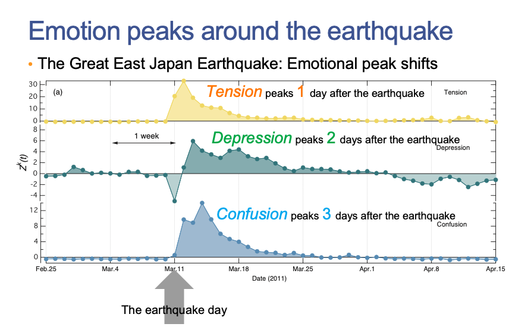
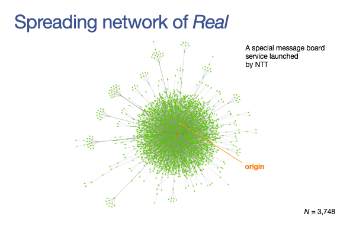
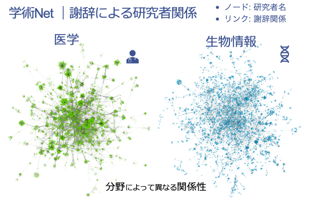
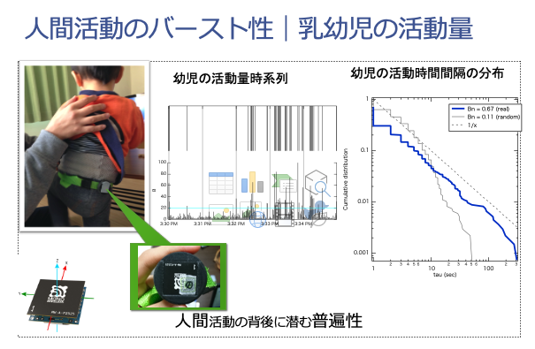

Sano Lab
Home
Member
Project
contact
Sano Lab
佐野研究室ではインターネット上の人間の行動・心理から実社会での行動まで、幅広い社会全体を対象に
数理モデルを活用してその構造を理解していきます。
Research topic 1
Research topic 2

Research topic 3

Research topic 4

Research topic 5

item 0
item 1
item 2
item 3
item 4
Item 1 of 5